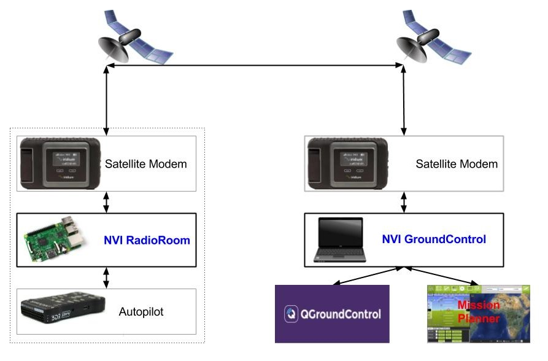

NVI Beyond Visual Line of Sight (BVLOS) telemetry system is designed to work with satellite or cellular modems such as Iridium GO! or Iridium Certus.
With NVI you can track, command, and control your boats, drones, planes, blimps, and other autonomous vehicle from the other side of the Earth.
NVI works with popular ground control stations such as Mission Planner, QGroundControl.
See Envirover docs for the instructions on NVI installation and operation.